Simplexe, structure et transformations
Mahendra Mariadassou
INRAE - MaIAGE
JES 2022
Plan
- Premiers contacts avec le simplexe
- Géométrie de Aitchison
- Coordonnées log-ratio
- Choix de la base
- Applications linéaires
\[ \def\vect#1{{\mathbf{#1}}} \def\CS{{\mathcal{S}}} \def\CC{{\mathcal{C}}} \def\RR{{\mathbb{R}}} \def\xlr{{\text{xlr}}} \def\alr{{\text{alr}}} \def\clr{{\text{clr}}} \def\ilr{{\text{ilr}}} \]
Premiers contacts avec le simplexe
Définition mathématique
Definition 1 (Simplexe (Aitchison 1982)) Le simplexe \(\mathcal{S}^D\) est défini comme l’ensemble des vecteurs de \(\mathbb{R}^D\) à coordonnées positives qui somment à \(1\):
\[ \CS^D = \left\{ \vect{x} = (x_1, \dots, x_D) \in \RR^D \text{ tels que } \sum_{j=1}^D x_j = 1 \text{ et } x_j > 0 \text{ pour } j=1,\dots,D \right\}. \]
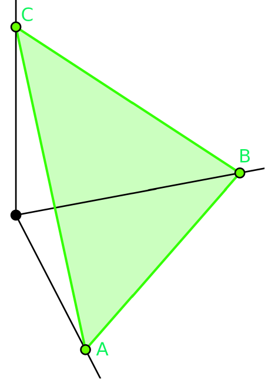
Warning
- Le simplexe est parfois défini avec des inégalités larges (\(\geq\)) plutôt que strictes (\(>\)).
- Par cohérence avec les opérations définies sur le simplexe, on utilise des inégalités strictes
- En particulier, la bordure du simplexe (compositions avec une ou plusieurs composantes nulles) n’est pas inclus dans le simplexe.
Popriétés du simplexe
Proposition 1 (Propriétés du simplexe) On énonce quelques propriétés simples du simplexe
Soit \(H\) hyperplan affine d’équation \(\vect{1}^\intercal \vect{x} = 1\) et \(C\) l’orthant positif \((\RR_+^\star)^D\). Le simplexe est défini comme \(\CS^D = H \cap C\).
Le simplexe \(\CS^D\) est de dimension \(D-1\)
Les points extrêmaux du simplexe (non-inclus dans ce dernier) sont les vecteurs \(e_1, \dots, e_D\) formant la base canonique de \(\RR^D\), de coordonnées:
Opérateur de clôture
L’opérateur de clôture, noté \(\CC\), permet de ramener une composition arbitraire, c’est à dire dont les coordonnées sont strictement positives mais dont la somme totale n’est pas forcément 1, dans le simplexe \(\CS^D\)
Definition 2 (Clôture) L’opérateur de clôture est défini par
\[ \CC: \vect{x} \in (\RR_+^\star)^D \mapsto \CC(\vect{x}) = \left[ \frac{x_1}{\sum_{j=1}^D x_j}, \dots, \frac{x_D}{\sum_{j=1}^D x_j} \right] \in \CS^D. \]
L’opérateur \(\CC\) consiste à normaliser les composantes pour qu’ils somment à \(1\) et justifie donc ne s’intéresser qu’aux compositions qui somment à \(1\).
Opérations dans le simplexe (I)
La géométrie d’Aitchison permet de doter \(\CS^D\) d’une structure d’espace vectoriel en remplaçant l’addition \(+\) et la multiplication \(\times\) par les opérateurs de perturbation \(\oplus\) et de powering \(\odot\), définis comme suit:
Definition 3 (Opérations dans le simplexe) Soient \(\vect{x}, \vect{y} \in \CS^D\) et \(\alpha \in \RR\),
\[ \begin{align*} \vect{x} \oplus \vect{y} & = \left[ \frac{x_1 y_1}{\sum_{j=1}^D x_j y_j}, \dots, \frac{x_D y_D}{\sum_{j=1}^D x_j y_j} \right] \\ & = \CC(x_1 y_1, \dots, x_D y_D) \end{align*} \]
\[ \begin{align} \alpha \odot \vect{x} & = \left[ \frac{x_1^\alpha}{\sum_{j=1}^D x_j^\alpha}, \dots, \frac{x_1^\alpha}{\sum_{j=1}^D x_j^\alpha} \right] \\ & = \CC(x_1^\alpha, \dots, x_D^\alpha) \end{align} \]
en utilisant la convention \(0^0 = 0\).
Opérations dans le simplexe (II)
Illustrons les opérateurs \(\oplus\) et \(\odot\) avec \(\vect{a} = (0.15, 0.35, 0.5)\), \(\vect{b} = (0.35, 0.15, 0.5)\) et:
Perturbation:
\(\vect{c} = \vect{a} \oplus \vect{b}\)
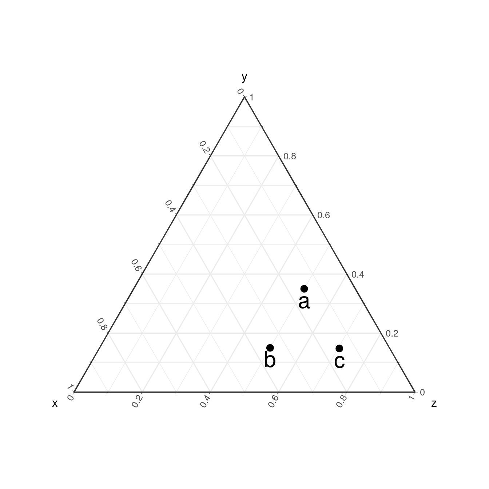
Powering:
\(\vect{d} = 2 \odot \vect{a}\), \(\vect{e} = 0.5 \odot \vect{a}\) et \(\vect{f} = -2 \odot \vect{a}\)
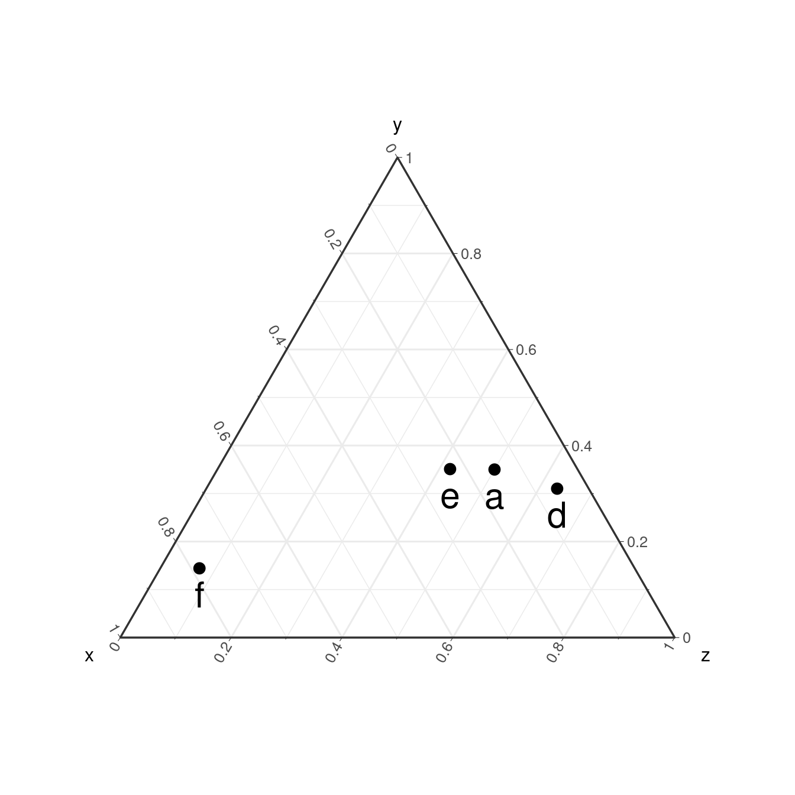
Espace vectoriel
Proposition 2 (Structure d’espace vectoriel) \((\CS^D, \oplus, \odot)\) est un \(\RR\)-espace vectoriel:
- l’élément neutre pour \(\oplus\) est la composition \(\vect{1}_D / D = (1/D, \dots, 1/D)\).
- l’élément neutre pour \(\odot\) est le réel \(1\)
Definition 4 (Soustraction) On peut définir la soustraction \(\ominus\) dans le simplexe.
\[ \vect{x} \ominus \vect{y} = \vect{x} \oplus (-1 \odot \vect{y}) = \CC\left( \frac{x_1}{y_1}, \dots, \frac{x_D}{y_D}\right) \]
Note
La restriction de \(\CS^D\) aux compositions à composantes non-nulles permet de bien définir \(\ominus\) sur le simplexe.
Espace euclidien
\(\CS^D\) peut être doté d’un produit scalaire pour le transformer en espace euclidien.
Definition 5 (Produit scalaire) Soient \(\vect{x}, \vect{y} \in \CS^D\), le produit scalaire de Aitchison entre \(\vect{x}\) et \(\vect{y}\), noté \(\langle \vect{x}, \vect{y} \rangle_A\) est défini par
\[ <\vect{x}, \vect{y}>_A = \frac{1}{2D} \sum_{j=1}^D \sum_{j' = 1}^D \log \frac{x_j}{x_{j'}} \log \frac{y_j}{y_{j'}}. \]
Proposition 3 (Norme d’Aitchison) Le produit scalaire \(<., .>_A\) induit la norme de Aitchison \(\parallel . \parallel_A\) et la distance de Aitchison \(d_A(., .)\) définies sur \(\CS^D\) par:
\[ \begin{align} \parallel \vect{x} \parallel_A & = \sqrt{<\vect{x}, \vect{x}>_A} \\ & = \left(\frac{1}{2D} \sum_{j = 1}^D \sum_{j' = 1}^D \left( \log \frac{x_j}{x_{j'}}\right)^2\right)^{1/2} \end{align} \]
\[ \begin{align} d_A(\vect{x}, \vect{y}) & = \parallel \vect{x} \ominus \vect{y} \parallel_A \\ & = \left(\frac{1}{2D} \sum_{j = 1}^D \sum_{j' = 1}^D \left( \log \frac{x_j}{x_{j'}} - \log \frac{y_j}{y_{j'}}\right)^2\right)^{1/2}. \end{align} \]
Espace euclidien (II)
Proof. On vérifie aisément que \(<., .>_A\) est symétrique. L’égalité suivante montre qu’elle est bilinéaire.
\[ \begin{align} <\vect{x} \oplus \alpha \odot \vect{z}, \vect{y}>_A & = \frac{1}{2D} \sum_{j=1}^D \sum_{j' = 1}^D \log \frac{x_j z_j^\alpha}{x_{j'} z_{j'}^\alpha} \log \frac{y_j}{y_{j'}} \\ &= \frac{1}{2D} \sum_{j=1}^D \sum_{j' = 1}^D \log \left( \frac{x_j}{x_{j'}} + \alpha \frac{z_j}{z_{j'}}\right) \log \frac{y_j}{y_{j'}} \\ & = <\vect{x}, \vect{y}>_A + \alpha <\vect{z}, \vect{y}>_A. \end{align} \]
Et celle-ci qu’elle est définie positive
\[ <\vect{x}, \vect{x}>_A = 0 \Leftrightarrow \sum_{1 \leq j, j' \leq D} \left( \log \frac{x_j}{x_{j'}}\right)^2 = 0 \Leftrightarrow \forall 1 \leq j, j' \leq D, \, x_j = x_{j'} \Rightarrow \vect{x} = \vect{1}_D / D \]
Géométrie du simplexe
Géométrie dans le simplexe
\((\CS^D, <., .>_A)\) est un espace euclidien de dimension \(D-1\). Il dispose donc de sa propre géométrie que nous allons brièvement décrire et illustrer dans \(\CS^3\).
Definition 6 (Boule) La boule \(\mathcal{B}_R(\vect{c})\) de rayon \(R\) et de centre \(\vect{c}\) est définie par:
\[ \mathcal{B}_R(\vect{c}) = \{ \vect{x} \in \CS^D \text{ t.q.} \parallel \vect{x} \ominus \vect{y} \parallel_A \leq R\} \]
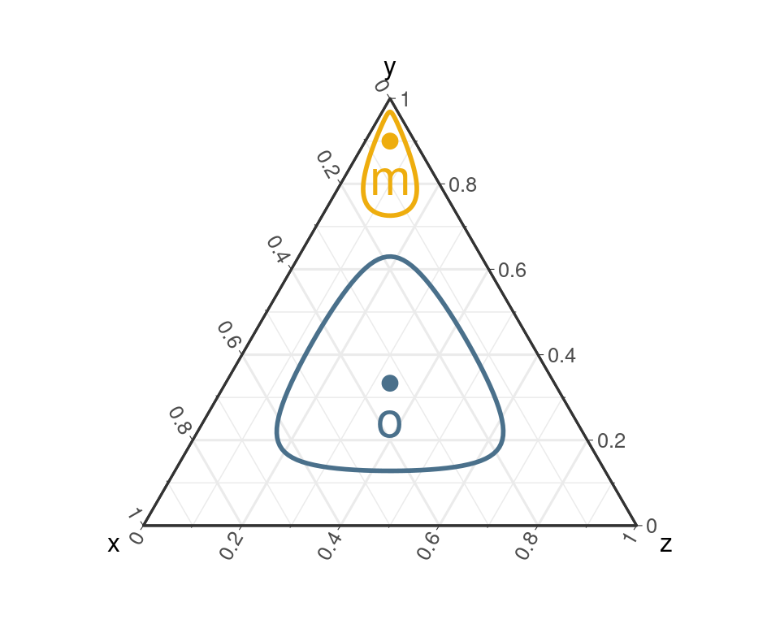
Definition 7 (Droite) La droite \(D_{\vect{a}, \vec{\vect{u}}}\) passant par \(\vect{a} \in \CS^D\) de direction \(\vect{u}\) est définie par
\[ D_{\vect{a}, \vec{\vect{u}}} = \left\{ \vect{x} \in \CS^D \text{ t.q. } \vect{x} = \vect{a} \oplus \alpha \odot \vect{u}, \alpha \in \RR \right\} \]
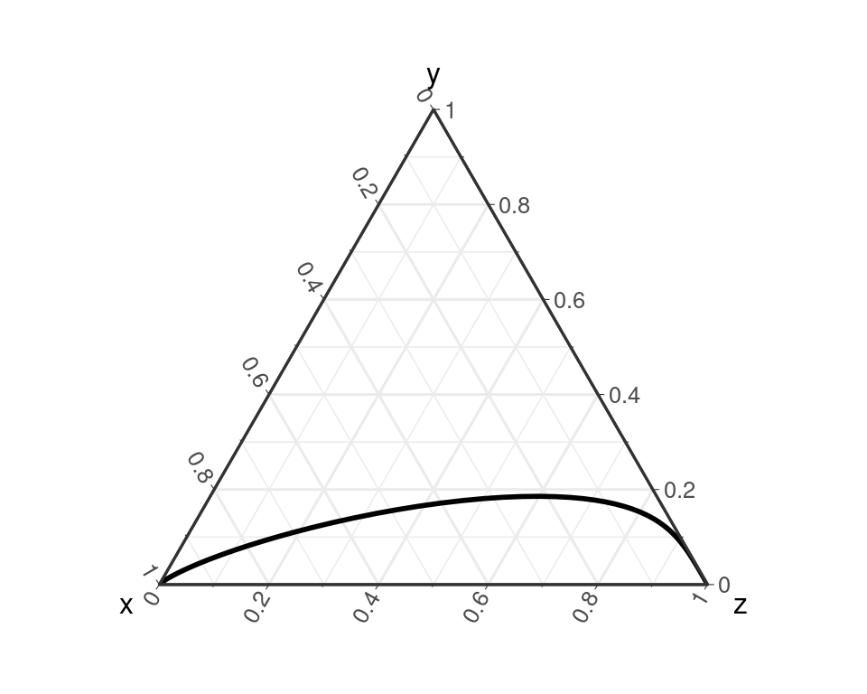
Droites dans le simplexe
On peut également définir des droites parallèles et orthogonales.
Definition 8 (Parallélisme)
Deux droites \(D_{\vect{a}, \vec{\vect{u}}}\) et \(D_{\vect{b}, \vec{\vect{v}}}\) sont parallèles ssi les compositions \(\vect{u}\) et \(\vect{v}\) sont colinéaires \(\Leftrightarrow \exists \alpha \in \RR, \vect{v} = \alpha \odot \vect{u}\)
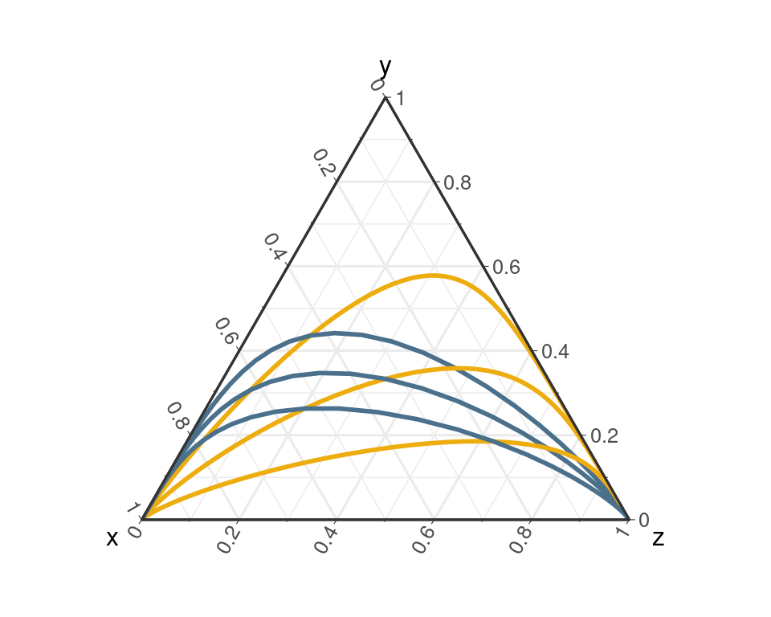
Definition 9 (Orthogonalité)
Deux droites \(D_{\vect{a}, \vec{\vect{u}}}\) et \(D_{\vect{b}, \vec{\vect{v}}}\) sont orthogonales si les compositions \(\vect{u}\) et \(\vect{v}\) sont orthogonales, c’est à dire si \(<\vect{u}, \vect{v}>_A = 0\).
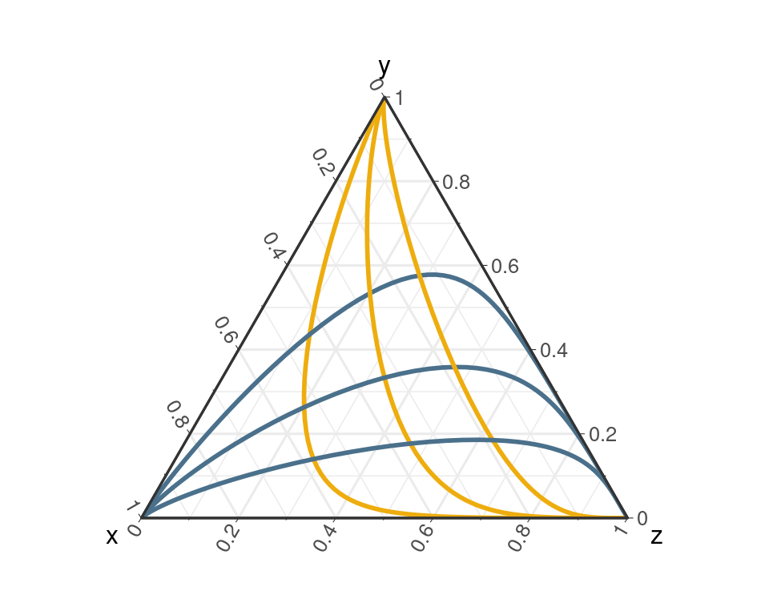
Autres formes
On peut également définir d’autres formes comme des carrés ou des triangles.
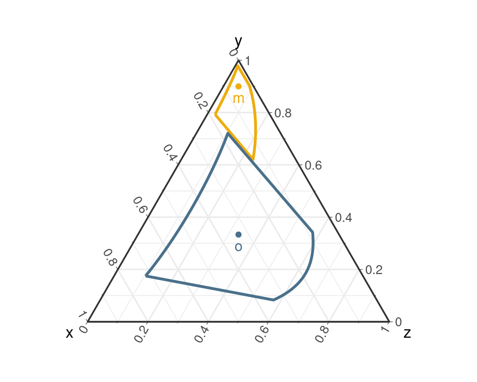
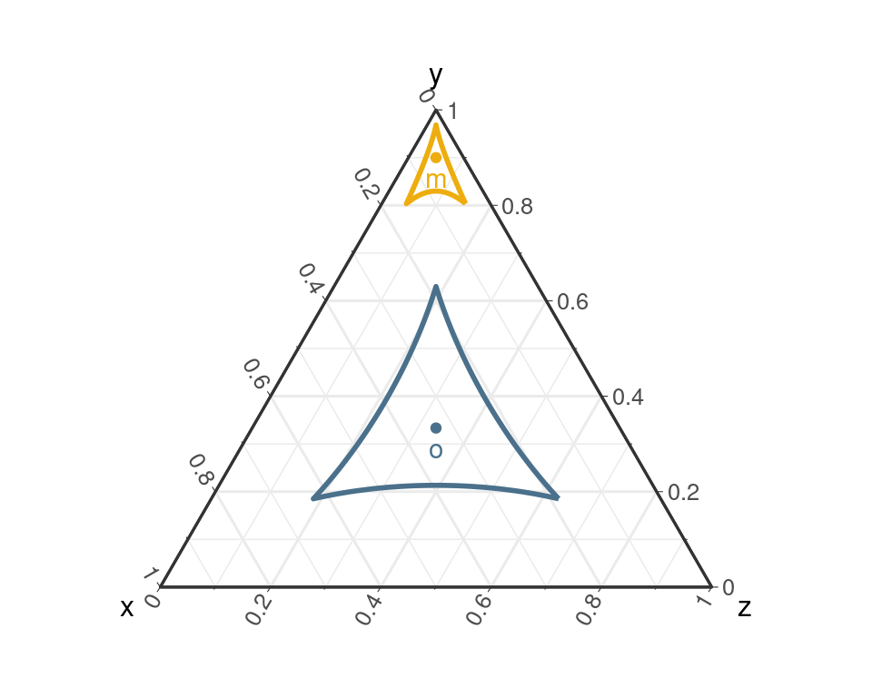
On reviendra plus tard sur la façon de définir ces objets.
Coordonnées log-ratio
La philosophie de la transformation
Géométrie du simplexe
- Géométrie contre-intuitive
- Information pertinente: ratios des composants
- Transformation \(\log\) pour symétriser les ratios
- Transformations log-ratio (xlr): \(\CS^D \leftrightarrow \RR^D\)
Philosophie de la transformation
- Transformer les compositions en vecteurs de \(\RR^D\)
- Appliquer les opérations usuelles dans \(\RR^D\)
- Transformer le résultat dans \(\CS^D\)
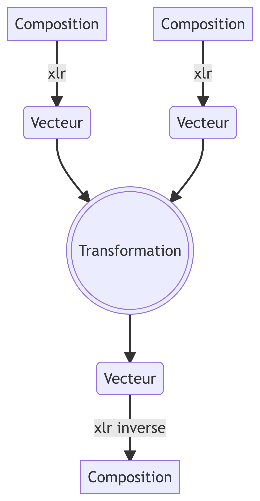
Aussi utilisé pour définir des formes (carrés, triangles, cercles, etc) dans \(\CS^D\)
La philosophie de la transformation
Pour être utile, les transformations xlr doivent idéalement la structure de \(\CS^D\):
Espace vectoriel
- \(\xlr(\vect{x} \oplus \vect{y}) = \xlr(\vect{x}) + \xlr(\vect{y})\)
- \(\xlr(\alpha \odot \vect{x}) = \alpha \xlr(\vect{x})\)
Espace euclidien
- \(\langle \vect{x}, \vect{y} \rangle_A = \xlr(\vect{x})^T \xlr(\vect{y})\)
- \(\parallel \vect{x} \parallel_A = \parallel \xlr(\vect{x}) \parallel\)
On cherche un (iso)morphisme isométrique de \(\CS^D\) dans \(\RR^D\)
Coordonnées alr
Definition 10 La transformation alr (pour additive log ratio) avec composante de référence \(j\) est définie par:
\[ \text{alr}_j(\vect{x}) = \left[ \log \frac{x_1}{x_j}, \dots, \log \frac{x_{j-1}}{x_j}, \log \frac{x_{j+1}}{x_j}, \dots, \log \frac{x_D}{x_j} \right] \]
Proposition 4 \(\alr_j\) est un isomorphisme de \((\CS^{D}, \oplus, \odot)\) dans \((\RR^{D-1}, +, \times)\). En particulier, pour tout \(\vect{x}, \vect{y} \in \CS^D, \alpha \in \RR\)
\[ \alr(\vect{x} \oplus \vect{y}) = \text{alr}_j(\vect{x}) + \text{alr}_j(\vect{y}) \quad \text{et} \quad \alr(\alpha \odot \vect{x}) = \alpha \text{alr}_j(\vect{x}) \]
Proposition 5 La transformation \(\text{alr}_j^{-1}\) est définie par:
\[ \begin{align*} \vect{x} \in \RR^{D-1} \mapsto \text{alr}_j^{-1}(\vect{x}) & = \CC(e^{x_1}, \dots, e^{x_{j-1}}, 1, e^{x_{j+1}}, \dots, e^{x_D}) \\ & = \left[ \frac{e^{x_1}}{1 + \sum_{j' \neq j} e^{x_{j'}}}, \dots, \frac{e^{x_D}}{1 + \sum_{j' \neq j} e^{x_{j'}}} \right]\in \CS^D \end{align*} \]
Coordonnées alr: illustrations
- Le choix de la composante de référence \(j\) est arbitraire. Pour \(\vect{x} = c(0.5, 0.3, 0.2)\):
\[ \begin{align} \alr_1(\vect{x}) & = (-0.511, 0.916) \\ \alr_2(\vect{x}) & = (0.511, -0.405) \\ \alr_3(\vect{x}) & = (0.916, 0.405) \end{align} \]
- \(\alr\) n’est pas une isométrie
\[ \| \alr_1(\vect{x}) \| > \| \alr_3(\vect{x}) \| > \| \alr_2(\vect{x}) \| > \| \vect{x} \|_A \]
- les droites ressemblent à des droites mais ni les cercles, ni les angles ne sont conservés.
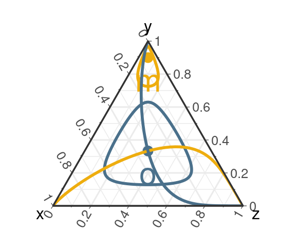
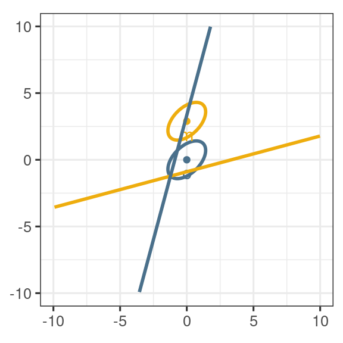
Coordonnées clr
Definition 11 La transformation clr (pour centered log ratio) est définie par:
\[ \text{clr}(\vect{x}) = \left[ \log \frac{x_1}{\bar{g}(\vect{x})}, \dots, \log \frac{x_D}{\bar{g}(\vect{x})} \right] \quad \text{avec} \quad \bar{g}(\vect{x}) = \sqrt[n]{x_1 \dots x_D} \]
Proposition 6 \(\clr\) est un morphisme isométrique. Pour tout \(\vect{x}, \vect{y} \in \CS^D, \alpha \in \RR\)
\[ \begin{align} \clr(\vect{x} \oplus \vect{y}) = \text{clr}_j(\vect{x}) + \text{clr}_j(\vect{y}) & \quad \text{et} \quad \clr(\alpha \odot \vect{x}) = \alpha \text{clr}_j(\vect{x}) \\ \langle \vect{x}, \vect{y} \rangle_A = \clr(\vect{x})^T \clr(\vect{y}) & \quad \text{et} \quad \| \vect{x} \|_A = \| \clr(\vect{x}) \| \end{align} \]
Proposition 7 La transformation \(\text{clr}^{-1}\), aussi appelé softmax, est définie par:
\[ \begin{align*} \vect{x} \in \RR^D \mapsto \text{clr}^{-1}(\vect{x}) = \CC(e^{x_1}, \dots, e^{x_D}) = \left[ \frac{e^{x_1}}{\sum_{j=1}^D e^{x_j}}, \dots, \frac{e^{x_D}}{\sum_{j=1}^D e^{x_j}} \right]\in \CS^D \end{align*} \]
Elle est invariante par translation par un multiple de \(\vect{1}_D\)
Coordonnées clr: remarques
- La transformation \(\clr\) n’a pas de composante de référence, c’est la moyenne géométrique \(g(\vect{x})\) qui joue ce rôle.
- Le vecteur \(\clr(\vect{x})\) a \(D\) composantes et pas \(D-1\)
- La transformation \(\clr\) n’est pas surjective: toutes les valeurs de \(\RR^D\) ne sont pas atteintes.
- Plus précisément, tous les vecteurs \(\clr(\vect{x})\) sont centrés (\(\clr(\vect{x})^T \vect{1}_D = 0\)) et \(\clr\) est bijective entre \(\CS^D\) et \(H = \{ \vect{x} \in \RR^D: \vect{x}^T \vect{1}_D = 0\}\)
La contrainte linéaire \(\clr(\vect{x})^T \vect{1}_D = 0\) est désagréable et reflète le fait que \(H\) est de dimension \(D-1\), on peut s’en débarrasser en utilisant une base orthonormale \(\vect{V}\) de \(H\) et en exprimant \(\clr(\vect{x})\) dans cette base.
Note
C’est le principe des transformations \(\ilr\) (Egozcue et al. 2003)
Coordonnées ilr
Soit \(\mathcal{V} = (\vect{v}_1, \dots, \vect{v}_{D-1})\) une base orthonornormée de \(H\) et \(\vect{V} = \left[ \vect{v}_1, \dots, \vect{v}_{D_1} \right]\) la matrice correspondante.
Definition 12 La transformation ilr de base \(\vect{V}\) est définie par:
\[ \begin{align*} \vect{x} \in \CS^D \mapsto \text{ilr}_\vect{V}(\vect{x}) &= \left(<\text{clr}(\vect{x}),\vect{v_1}>, \dots, <\text{clr}(\vect{x}),\vect{v_{D-1}}> \right) \\ & = \vect{V}^T \text{clr}(\vect{x}) \end{align*} \]
Proposition 8
\(\ilr_V\) est un isomorphisme isométrique de \(\CS^D\) dans \(\RR^{D-1}\) et vérifie les même propriétés que la transformation \(\clr\) (cf Proposition 6)
Proposition 9 La transformation \(\text{ilr}^{-1}\) est définie par:
\[ \vect{x} \in \RR^{D-1} \mapsto \text{ilr}_{\vect{V}}^{-1}(\vect{x}) = \CC(\exp(\vect{V}\vect{x})) \in \CS^D \]
où la fonction exponentielle est appliquée terme à terme à \(\vect{x}\).
Coordonnées ilr: illustrations
- \(\vect{V}\) est une matrice de contraste: chaque vecteur \(\vect{v}_j\) vérifie \(v_{j1} + \dots + v_{jD} = 0\). Le produit scalaire \(\vect{v}_j^T \text{clr}(\vect{x})\) définit donc un contraste sur les composantes de \(\log \vect{x}\).
- On peut compléter \(\vect{V}\) pour avoir une matrice orthogonale dans \(\RR^D\)
\[ \begin{align} \vect{V}^\star & = [\vect{V}\quad \vect{1}_D/\sqrt{D}] \in \mathbb{O}_D \\ \vect{V}^T\vect{V} & = \vect{I}_{D-1} \\ \vect{V}\vect{V}^T & = \underbrace{\vect{I}_D - \vect{1}_D\vect{1}_D^T / D}_{= \vect{G}_D} \end{align} \]
- \(\ilr_V\) préserve les droites, les angles et les distances.
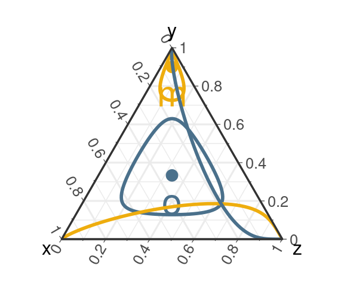
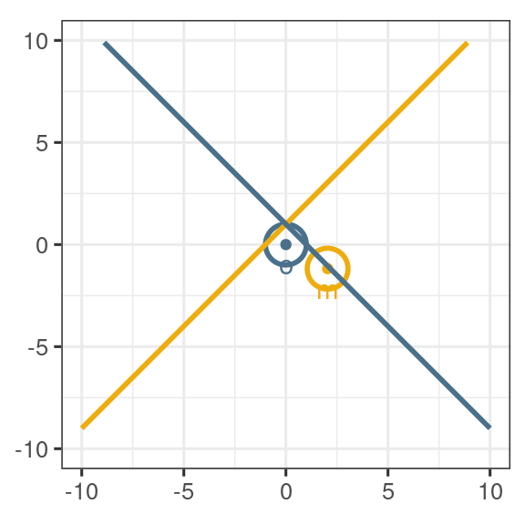
Coordonnées ilr: remarques
Les coordonnées \(\ilr\) sont moins interprétables que les coordonnées \(\clr\) et \(\alr\)
Les coordonnées \(\ilr\) dépendent de \(\vect{V}\) et il faut donc choisir une base pertinente.
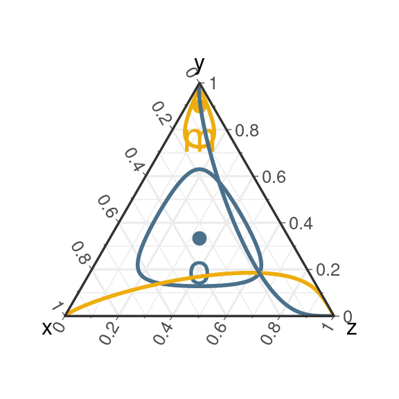

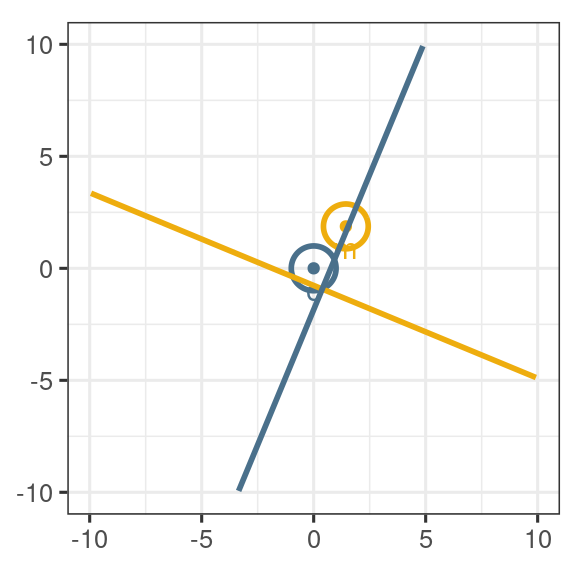
Liens entre les systèmes
- Toutes les transformations log-ratio sont construites à partir des log-composantes
- On peut donc toujours écrire \(\xlr(\vect{x}) = \vect{A} \log(\vect{x})\) pour une matrice \(\vect{A}\) bien choisie
Pour \(\alr_D\),
\[ \vect{A} = \vect{F}_D = [\vect{I}_{D-1} \; -\vect{1}_{D-1}^T] \]
Pour \(\clr\),
\[ \begin{align} \vect{A} & = \vect{G}_D \\ & = \vect{I}_D - \vect{1}_{D\times D}/D \\ & = \vect{I}_D - \vect{1}_{D}\vect{1}_{D}^T/D \end{align} \]
Pour \(\ilr_V\),
\[ \vect{A} = \vect{V}^T \vect{G}_D = \vect{V}^T \]
On sait que \(\ilr_V(\vect{x}) = \vect{V}^T \clr(\vect{x})\).
\(\vect{G}_D\) est la matrice de projection orthogonale sur \(H = \vect{1}_D^\perp\).
Peut-on exprimer simplement n’importe quel \(\xlr(\vect{x})\) en fonction des autres ?
Liens entre les systèmes (II)
Proposition 10 Soit \(\vect{x} \in \CS^D\) une composition et \(\log\vect{x}\) le vecteur des log-composantes. Les transformations alr\(_D\), clr et ilr\(_\vect{V}\) peuvent se réécrire comme suit:
\[ \begin{align*} \text{alr}_D(\vect{x}) & = \mathbf{F}_D \log\vect{x} \\ \text{clr}(\vect{x}) & = \vect{G}_D \log\vect{x} = \log \vect{x} - \log \bar{g}(\vect{x}) \vect{1}_D \\ \text{ilr}_{\vect{V}}(\vect{x}) & = \vect{V}^T \vect{G}_D \log\vect{x} = \vect{V}^T \log \vect{x} \\ \end{align*} \]
Ils peuvent également s’exprimer les uns en fonctions des autres comme suit:
\[ \begin{align} \text{alr}_D(\vect{x}) & = \vect{F}_D \text{clr}(\vect{x}) & \text{ilr}_\vect{V}(\vect{x}) & = \vect{V}^T \text{clr}(\vect{x}) & \text{alr}_D(\vect{x}) & = \vect{F}_D \vect{V} \ilr_V(\vect{x}) \\ \text{clr}(\vect{x}) & = \vect{K}_D \alr_D(\vect{x}) & \text{clr}(\vect{x}) & = \vect{V} \text{ilr}_\vect{V}(\vect{x}) & \ilr_V(\vect{x}) & = \vect{V}^T \vect{K}_D \alr_D(\vect{x}) \end{align} \]
où \(\mathbf{K}_D=\begin{bmatrix} \mathbf{I}_{D-1} - \mathbf{1}_{D-1}\mathbf{1}_{D-1}^T/D\\ -\mathbf{1}_{D-1}^T/D \end{bmatrix}\)
Bases
Base ilr
Il est nécessaire de choisir une base orthonormée de \(H\). Nous considérons ici deux stratégies:
- le pivot, obtenu en appliquant l’orthogonalisation de Gram-Schmidt à la base canonique (Filzmoser, Hron, and Templ 2018)
- les partitions binaires, si on dispose d’un arbre binaire sur les composantes (Egozcue and Pawlowsky-Glahn 2005)
Note
La base pivot, qui donne les pivot log-ratio, est souvent la base utilisée par défaut en l’absence d’information sur les composantes.
Base ilr (II)
De façon générale, les transformations ilr sont simples si chaque vecteur \(\vect{v}\) est associé à une partition en 3 parties, \(\{1, \dots, D\} = J_{-} \sqcup J_{0} \sqcup J_{+}\), et peut se réécrire:
\[ v_j = \begin{cases} \frac{-\alpha}{|J_{-}|} & \text{si } j \in J_{-} \\ 0 & \text{si } j \in J_{0} \\ \frac{\alpha}{|J_{+}|} & \text{si } j \in J_{+} \end{cases} \quad \text{avec} \quad \alpha = \sqrt{\frac{|J_+||J_-|}{|J_+|+|J_-|}} \]
La coordonnée ilr correspondante est simplement (à \(\alpha\) près) le log-ratio entre les moyennes géométriques des éléments de \(J_+\) et de ceux de \(J_-\):
\[ \begin{eqnarray} <\text{clr}(\vect{x}), \vect{v}> &=& \alpha \log \frac{\left( \prod_{j \in J_+}x_j\right)^{\frac{1}{|J_+|}}}{\left( \prod_{j \in J_-}x_j\right)^{\frac{1}{|J_-|}}}\\ &=& \sqrt{\frac{|J_+||J_-|}{|J_+|+|J_-|}} \left( \frac{1}{|J_+|} \sum_{j \in J_+} \log x_j - \frac{1}{|J_-|} \sum_{j \in J_-} \log x_j \right) \end{eqnarray} \]
Base pivot: Pivot log-ratio
Proposition 11 (base et coordonnées pivot) La base pivot \(\vect{V} = [\vect{v}_1\, \dots\, \vect{v}_{D-1}]\) est définie par les vecteurs unitaires:
\[ \begin{align*} \vect{v}_1 & = \sqrt{\frac{D-1}{D}} \left(1, -\frac{1}{D-1}, \dots, -\frac{1}{D-1}\right) \\ \vect{v}_j & = \sqrt{\frac{D-j}{D -j+1}}\bigg(\underbrace{0, \dots, 0 }_{j-1}, 1, \underbrace{-\frac{1}{D-j}, \dots, -\frac{1}{D-j}}_{D-j} \bigg)\\ \vect{v}_{D-1} & = \frac{1}{\sqrt{2}}(0, \dots, 0, -1, 1) \end{align*} \]
correspondant aux couples \((J_+, J_-) = (\{j\}, \{j+1, \dots, D\})\).
Les coordonnées PLR se comprennent (à un facteur multiplicatif près) comme la moyenne des log-ratio \(\log \frac{x_j}{x_{j+1}}, \dots, \log \frac{x_j}{x_D}\).
Balances
- Utile lorsque les composantes sont organisées dans un arbre binaire.
Proposition 12 (Balance) Soit \(\mathcal{T}\) un arbre binaire sur \({1, \dots, D}\). Chacun des \(D-1\) noeuds internes \(n_1, \dots, n_{D-1}\) définit deux sous ensembles de composantes \(J_{i,g}\) et \(J_{i,d}\) (liés aux sous-arbres gauche et droit). La base pivot \(\vect{V} = [\vect{v}_1\, \dots\, \vect{v}_{D-1}]\) associée à \(\mathcal{T}\) est définie par les vecteurs unitaires:
\[ v_{ij} = \begin{cases} \frac{\alpha_i}{|J_{i,g}|} & \text{si } j \in J_{i,g} \\ \frac{-\alpha_i}{|J_{i,d}|} & \text{si } j \in J_{i,d} \\ 0 & \text{sinon} \\ \end{cases} \quad \text{avec} \quad \alpha_i = \sqrt{\frac{|J_{i,d}||J_{i,g}|}{|J_{i,d}|+|J_{i,g}|}} \]
Les balances correspondent, à un facteur multiplicatif près, au log-ratio entre la moyenne géométrique des composantes du sous-fils gauche et celle des composantes du sous-fils droit.
Les log-ratio pivots correspondent au cas particulier de l’arbre peigne.
Balances: exemples
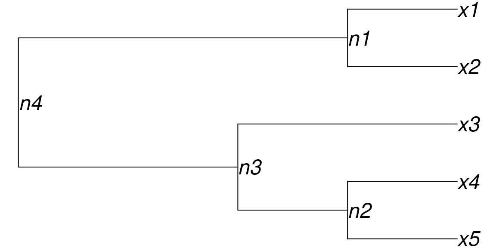
\[ \begin{array}{l|lllll} & x_1 & x_2 & x_3 & x_4 & x_5 \\ \hline \vect{v}_1 & + & - & & & \\ \vect{v}_2 & & & & + & - \\ \vect{v}_3 & & & + & - & - \\ \vect{v}_4 & + & + & - & - & - \end{array} \]
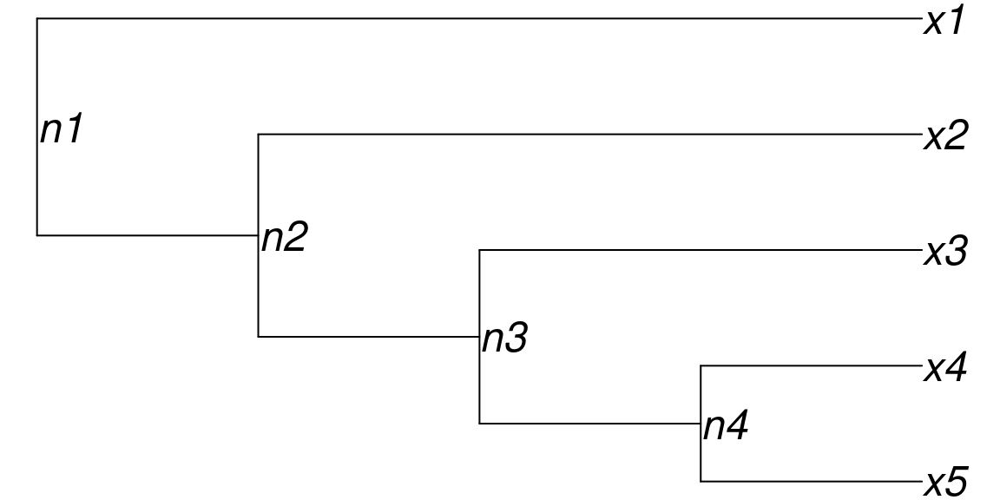
\[ \begin{array}{l|lllll} & x_1 & x_2 & x_3 & x_4 & x_5 \\ \hline \vect{v}_1 & + & - & - & - & - \\ \vect{v}_2 & & + & - & - & - \\ \vect{v}_3 & & & + & - & - \\ \vect{v}_4 & & & & + & - \end{array} \]
Applications linéaires
Pourquoi faire ?
- Pour définir des applications entre simplexes
- Pour définir des applications entre simplexes et espaces euclidiens usuels
- Comme brique de base pour définir des lois de probabilités sur le simplexe
- Comme brique de base pour faire des méthodes d’analyse de données
Comme pour géométrie de Aitchison, les applications linéaires utilisent la philosophie de la transformation.
Endomorphismes du simplexe \(\CS^D\)
Definition 13 Soit \(\vect{V}\) une matrice de contrastes de taille \(D \times (D-1)\) et \(\vect{A}^\star \in \mathcal{M}_{D-1}(\RR)\) une matrice carrée de taille \(D-1\). \(\vect{A}^\star\) représente un endomorphisme \(f_{\vect{A}^\star}\) de \(\RR^{D-1}\) dans la base canonique. L’endomorphisme \(\psi_{\vect{A}^\star, \vect{V}}\) sur \(\CS^D\) est défini par
\[ \vect{x} \in \CS^D \mapsto \psi_{\vect{A}^\star, \vect{V}}(\vect{x}) = \left(\text{ilr}_\vect{V}^{-1} \circ f_{\vect{A}^\star} \circ \text{ilr}_\vect{V} \right)(\vect{x}) \in \CS^D \]
- Définition désagréable puisqu’elle dépend a priori du choix de \(\vect{A}^\star\) et de la base \(\vect{V}\).
Proposition 13
\(\psi_{\vect{A}^\star, \vect{V}}\) ne dépend que de \(\vect{A} = \vect{V} \vect{A}^\star \vect{V}^T\)
Proof. \(\psi_{\vect{A}^\star, \vect{V}}(\vect{x}) = \CC\left(\exp\left( \vect{V} \vect{A}^\star \vect{V}^T \clr (\vect{x}) \right)\right)\)
- Peut-on définir \(\psi_{\vect{A}^\star, \vect{V}}(\vect{x})\) à partir de \(\vect{A}\) et \(\clr(\vect{x})\)?
- Que faut-il imposer à \(\vect{A}\) ?
- \(\vect{A} = \vect{V} \vect{A}^\star \vect{V}^T\) est à somme nulle en ligne et en colonne:
\[ \vect{A} \vect{1}_D = \vect{A}^T \vect{1}_D = \vect{0}_D \Leftrightarrow \vect{A} = \vect{G}_D \vect{A} \vect{G_D} \]
- C’est un invariant caractéristique.
Propriétés de \(\vect{A}\)
Proposition 14
Soit \(\mathcal{A}_D\) l’ensemble des matrices carré de taille \(D\) à somme nulle en ligne et en colonne. Toute matrice \(\vect{A}\) de \(\mathcal{A}_D\) peut être décomposée sous la forme \(\vect{A} = \vect{V} \vect{A}^\star \vect{V}^T\) avec \(\vect{V}\) une matrice de contrastes et \(\vect{A}^\star = \vect{V}^T \vect{A} \vect{V}\) carrée de taille \(D-1\).
\(\mathcal{A}_D\) est parfois appelé l’ensemble des matrices double centrées.
Soit \(\vect{A} \in \mathcal{A}_D\) une matrice à somme nulle et \((\vect{A}^\star, \vect{V})\), avec \(\vect{V}\) matrice de contraste, une décomposition quelconque de \(\vect{A}\). L’endomorphisme de \(\CS^D\) associé à \(\vect{A}\) est
\[ \vect{x} \in \CS^D \mapsto \vect{A} \boxdot \vect{x} = \psi_{\vect{A}^\star, \vect{V}}(\vect{x}) = \text{clr}^{-1}\left( \vect{A} \text{clr}(\vect{x})\right) \]
Si \(\vect{A} \notin \mathcal{A}_D\), on peut bien sûr écrire \(\text{clr}^{-1}\left( \vect{A} \text{clr}(\vect{x})\right)\) mais on a alors \(\text{clr}^{-1}\left( \vect{A} \text{clr}(\vect{x})\right) = \underbrace{\vect{G}_D \vect{A} \vect{G}_D}_{\in \mathcal{A}_D} \boxdot \vect{x}\)
Propriétés de \(\mathcal{A}_D\)
Proposition 15 L’endomorphisme identité de \(\CS^D\) correspond à \(\vect{A} = \vect{G}_D\). Soit \(\vect{A} \in \mathcal{A}_D\) et \((\vect{A}^\star, \vect{V})\) une décomposition de \(\vect{A}\). \(\vect{A}\) est inversible dans \(\mathcal{A}_D\) si et seulement si \(\vect{A}^\star\) est inversible et son inverse est donnée par
\[ \vect{A}^{-1} = (\vect{A} + \vect{1}_D\vect{1}_D^T)^{-1} - \vect{1}_D\vect{1}_D^T \]
Preuve
- La première affirmation vient de \(\vect{G}_D = \vect{V} \vect{I}_{D-1} \vect{V}^T\) pour n’importe quel \(\vect{V}\).
- L’écriture \(\text{ilr}_\vect{V}^{-1} \circ f_{\vect{A}^\star} \circ \text{ilr}_\vect{V}\) prouve que \(\vect{x} \mapsto \vect{A} \boxdot \vect{x}\) est inversible si et seulement \(\vect{A}^\star\) est inversible, d’inverse \(\text{ilr}_\vect{V}^{-1} \circ f_{{\vect{A}^\star}^{-1}} \circ \text{ilr}_\vect{V}\)
- Il reste donc à prouver que \({\vect{A}^\star}^{-1} = \left(\vect{A}^{-1}\right)^\star\):
\[ \begin{align*} \vect{A}^\star \left(\vect{A}^{-1}\right)^\star &= \vect{V}^T \vect{A} \vect{V} \vect{V}^T \vect{A}^{-1} \vect{V} \\ & = \vect{V}^T (\vect{A} + \vect{1}_D \vect{1}_D^T) \vect{V} \vect{V}^T \left( (\vect{A} + \vect{1}_D \vect{1}_D^T)^{-1} - \vect{1}_D \vect{1}_D^T \right) \vect{V} \\ & = \vect{V}^T (\vect{A} + \vect{1}_D \vect{1}_D^T) \vect{V} \vect{V}^T (\vect{A} + \vect{1}_D \vect{1}_D^T)^{-1} \vect{V} = \vect{I}_{D-1} \end{align*} \]
Applications linéaires entre simplexes
La démarche précédente peut-être adaptée aux applications linéaires entre simplexes de tailles différentes.
Definition 14 (Morphismes entre simplexes) Soient
- \(\vect{V}_D\) une matrice de contrastes de taille \(D \times (D-1)\),
- \(\vect{V}_L\) une matrice de contrastes de taille \(L \times (L-1)\)
- \(\vect{A}^\star\) une matrice de taille \((D-1) \times (L-1)\).
\(\vect{A}^\star\) représente une application linéaire de \(\RR^{L-1}\) dans \(\RR^{D-1}\) dans leurs bases canoniques respectives: \(f_{\vect{A}^\star}: \vect{x} \in \RR^{L-1} \mapsto \vect{A}^\star \vect{x} \in \RR^{D-1}\). L’application linéaire \(\psi_{\vect{A}^\star, \vect{V}_L, \vect{V}_D}\) de \(\CS^L\) à valeurs dans \(\CS^D\) est définie par
\[ \vect{x} \in \CS^L \mapsto \psi_{\vect{A}^\star, \vect{V}_L, \vect{V}_D}(\vect{x}) = \left(\text{ilr}_{\vect{V}_D}^{-1} \circ f_{\vect{A}^\star} \circ \text{ilr}_{\vect{V}_L} \right)(\vect{x}) \in \CS^D \]
Comme précédemment, l’application \(\psi_{\vect{A}^\star, \vect{V}_L, \vect{V}_D}\) est entièrement déterminée par \(\vect{A} = \vect{V}_D \vect{A}^\star \vect{V}_L^T\) et cette dernière est à somme nulle en ligne et en colonne.
Applications linéaires entre simplexes
Proposition 16 Soit \(\mathcal{A}_{DL}\) l’ensemble des matrices \(\vect{A}\) de taille \(D \times L\) à somme nulle en ligne et en colonne, c’est à dire tels que \(\vect{A} = \vect{G}_D \vect{A} \vect{G}_L\). Avec les notations précédentes:
- \(\vect{V}_D \vect{A}^\star \vect{V}_L^T \in \mathcal{A}_{DL}\) pour tout \(\vect{A}^\star\) de taille \((D-1) \times (L-1)\)
- Toute matrice \(\vect{A} \in \mathcal{A}_{DL}\) peut se décomposer sous la forme \(\vect{A} = \vect{V}_D \vect{A}^\star \vect{V}_L^T\)
- \(\psi_{\vect{A}^\star, \vect{V}_L, \vect{V}_D}(\vect{x}) = \text{clr}_D^{-1}\left( \vect{A} \text{clr}_L(\vect{x}) \right)\) ne dépend que de \(\vect{A}\).
En particulier, toute matrice \(\vect{A} \in \mathcal{A}_{DL}\) dont une décomposition est \(\vect{A} = \vect{V}_D \vect{A}^\star \vect{V}_L^T\) induit une application linéaire de \(\CS^L\) dans \(\CS^D\) définie par
\[ \vect{x} \in \CS^L \mapsto \vect{A} \boxdot \vect{x} = \psi_{\vect{A}^\star, \vect{V}_L, \vect{V}_D}(\vect{x}) \in \CS^D. \]
Cette dernière est bien définie et ne dépend pas de la décomposition choisie pour \(\vect{A}\).
Applications d’un simplexe vers \(\RR^D\)
Proposition 17 Soit \(\mathcal{A}_{\bullet L}\) l’ensemble des matrices \(\vect{A}\) de taille \(D \times L\) à somme nulle en ligne (mais pas forcément en colonne), c’est à dire tels que \(\vect{A} \vect{G}_L = \vect{A}\). En notant comme précédemment \(\vect{D}_L\) une matrice de contrastes de taille \(L \times (L-1)\) et \(\vect{A}^\star\) une matrice quelconque de taille \(D \times (L-1)\), on a:
- \(\vect{A} = \vect{A}^\star \vect{V}_L^T \in \mathcal{A}_{\bullet L}\)
- Toute matrice \(\vect{A} \in \mathcal{A}_{\bullet L}\) peut se décomposer sous la forme \(\vect{A} = \vect{A}^\star \vect{V}_L^T\) (avec \(\vect{A}^\star = \vect{A} \vect{V}_L\))
- \(\psi_{\vect{A}^\star, \vect{V}_L, \bullet}(\vect{x}) = (f_{\vect{A}^\star} \circ \text{ilr}_{\vect{V}_L})(\vect{x})\) ne dépend que de \(\vect{A}\).
En particulier, toute matrice \(\vect{A} \in \mathcal{A}_{\bullet L}\) dont une décomposition est \(\vect{A} = \vect{A}^\star \vect{V}_L^T\) induit une application linéaire de \(\CS^L\) dans \(\RR^D\) définie par
\[ \vect{x} \in \CS^L \mapsto \vect{A} \boxdot \vect{x} = \vect{A}^\star \text{ilr}_{\vect{V}_L}(\vect{x}) \in \RR^D. \]
Cette dernière est bien définie et ne dépend pas de la décomposition choisie pour \(\vect{A}\).
Applications de \(\RR^L\) vers un simplexe
Proposition 18 Soit \(\mathcal{A}_{D\bullet}\) l’ensemble des matrices \(\vect{A}\) de taille \(D \times L\) à somme nulle en colonne (mais pas forcément en ligne), c’est à dire tels que \(\vect{G}_D \vect{A} = \vect{A}\). En notant comme précédemment \(\vect{V}_D\) une matrice de contrastes de taille \(D \times (D-1)\) et \(\vect{A}^\star\) une matrice quelconque de taille \((D-1) \times L\), on a:
- \(\vect{A} = \vect{V}_D \vect{A}^\star \in \mathcal{A}_{D \bullet}\)
- toute matrice \(\vect{A} \in \mathcal{A}_{D \bullet}\) peut se décomposer sous la forme \(\vect{A} = \vect{V}_D \vect{A}^\star\) (avec \(\vect{A}^\star = \vect{V}_D^T \vect{A}\))
- \(\psi_{\vect{A}^\star, \bullet, \vect{V}_L}(\vect{x}) = (\text{ilr}_{\vect{V}_L}^{-1} \circ f_{\vect{A}^\star})(\vect{x})\) ne dépend que de \(\vect{A}\).
En particulier, toute matrice \(\vect{A} \in \mathcal{A}_{D \bullet}\) dont une décomposition est \(\vect{A} = \vect{V}_D \vect{A}^\star\) induit une application linéaire de \(\RR^L\) dans \(\CS^D\) définie par
\[ \vect{x} \in \RR^L \mapsto \vect{A} \boxdot \vect{x} = \text{ilr}_{\vect{V}_D}^{-1}(\vect{A}^\star\vect{x}) \in \CS^D. \]
Cette dernière est bien définie et ne dépend pas de la décomposition choisie pour \(\vect{A}\).
Conclusion
Messages à retenir
- Les compositions vivent dans le simplexe \(\CS^D\)
- \(\CS^D\) est un espace euclidien avec sa propre géométrie
- relativement contre-intuitive (courbure négative)
- Les transformations log-ratio permettent de plonger \(\CS^D\) dans un espace euclidien:
- alr est la plus simple à comprendre
- clr, ilr sont les plus simples du point de vue géométrique
- La philosophie de la transformation permet de jongler entre \(\RR^D\) / \(\RR^{D-1}\) et \(\CS^D\) et définir simplement des fonctions sur \(\CS^D\).